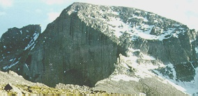

Longs Peak: North Face

The North Face route of Longs Peak is the perfect tour for the beginner
hiker/climber who wants to reach the summit following a different route from
the main trail. The North Face is the most direct and shortest route and
does not have the crowds you'd find in the more popular Keyhole route. The
views from the North Face are spectacular and provide some of the finest
scenery in the park.
Difficulty Level: Beginner
Time: Allow for one day
Physical stress: Mild to moderate